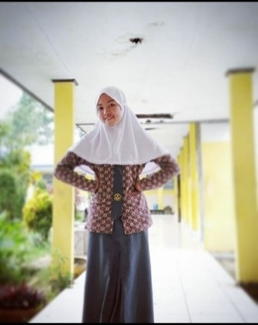

Riwayat Pendidikan
Pendidikan Sekolah Dasar
Reski Dwi Putri menempuh pendidikan di Sekolah Dasar pada umur 7 tahun dikelas 1. Bersama dengan dua orang teman kecilnya, mereka didaftarkan untuk sekolah di tempat yang sama yaitu SD Negeri 59 Tanete yang berada tidak jauh dari tempat tinggal mereka. Masuk Sekolah dasar pada tahun 2008 dengan mengambil jalur umum. Selama menempuh pendidikan sekolah dasar, bermain bersama dengan teman adalah satu hal yang terpenting.
Pendidikan Sekolah Menengah Pertama
Reski Dwi Putri menempuh pendidikan dijenjang yang lebih tinggi setelah lulus dari sekolah dasar. Menempuh pendidikan di Sekolah Menengah Pertama juga bersama dengan temannya melalui jalur umum di SMP Negeri 14 Bulukumba pada tahun 2013. Bersekolah selama tiga tahun lamanya di Sekolah Menengah Pertama ini dan mulai mengikuti beberapa kegiatan sekolah seperti baris berbaris.
Pendidikan Sekolah Menengah Atas
Setelah menempuh pendidikan selama tiga tahun di sekolah menengah pertama, Reski Dwi Putri melanjutkan pendidikannya di Sekolah Menengah Atas melalui jalur khusus yaitu jalur bagi siswa yang mendapatkan prestasi di dalam kelas di SMA Negeri 2 Bulukumba pada tahun 2016 tepatnya berada di Jalan Kemakmuran yang tidak jauh dari tempat tinggalnya. Menempuh pendidikan di sekolah menengah atas juga selama tiga tahun dengan mulai mengembangkan minat dan bakat serta mengikuti kegiatan ekstrakuliker di sekolah.
Pendidikan Perguruan Tinggi
Reski Dwi Putri mendaftar ke jenjang pendidikan yang lebih tinggi lagi setelah menempuh pendidikan di sekolah menengah atas di Perguruan Tinggi. Mendaftarkan diri pada PTN yang diminati melalui jalur SNMPTN di Unhas namun Hasilnya ia tidak lolos melalui jalur tersebut sehingga mendaftar kembali melalui jalur SPAN PTKIN, UMPTKIN dan UMMPTKIN namun kembali tidak lulus pada jalur tersebut. Dengan tidak putus asa maka kembali mendaftarkan diri pada jalur SBMPTN dan akhirnya bisa lolos melalui jalur tersebut dengan Prodi Agribisnis di Fakultas Pertanian. Mengikuti tahap pembelajaran di jenjang perguruan tinggi tahun 2019 dan merupakan mahasiswa aktif sekarang ini.